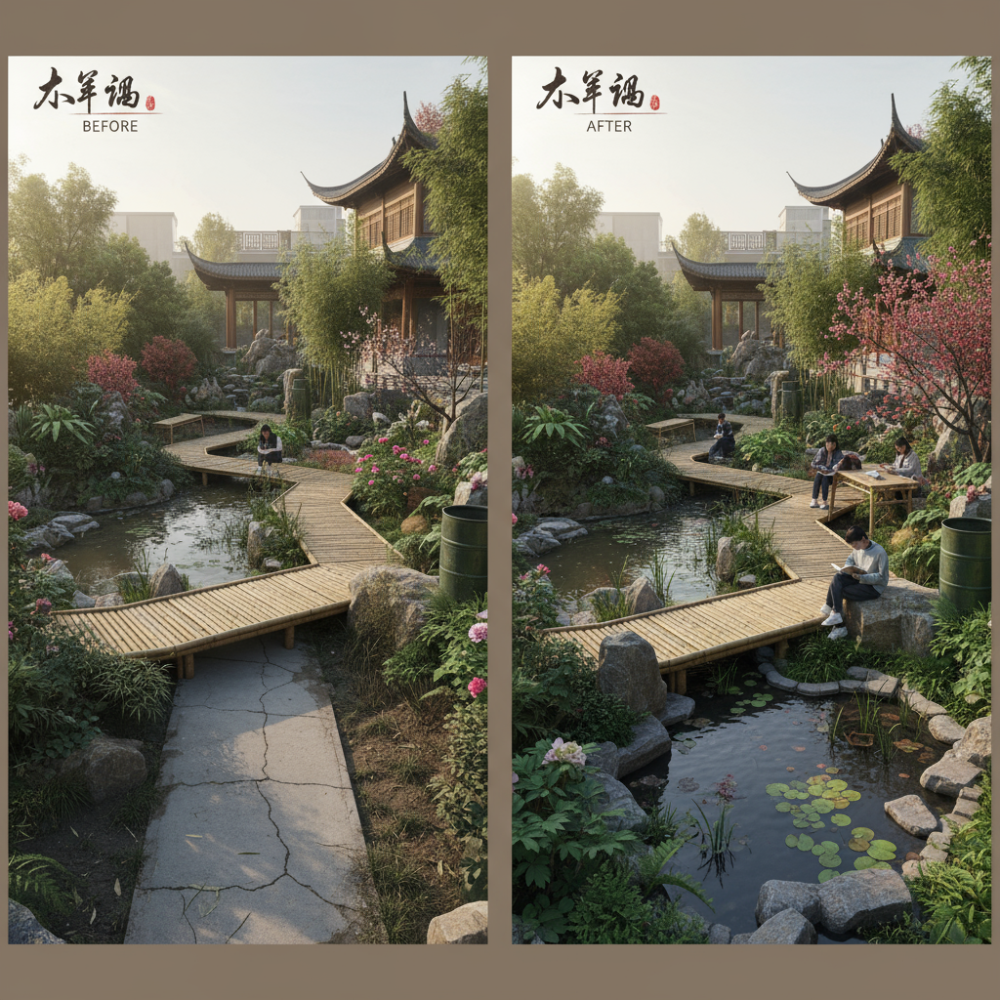
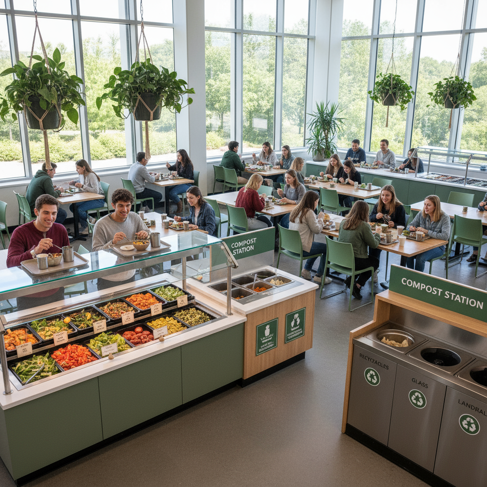
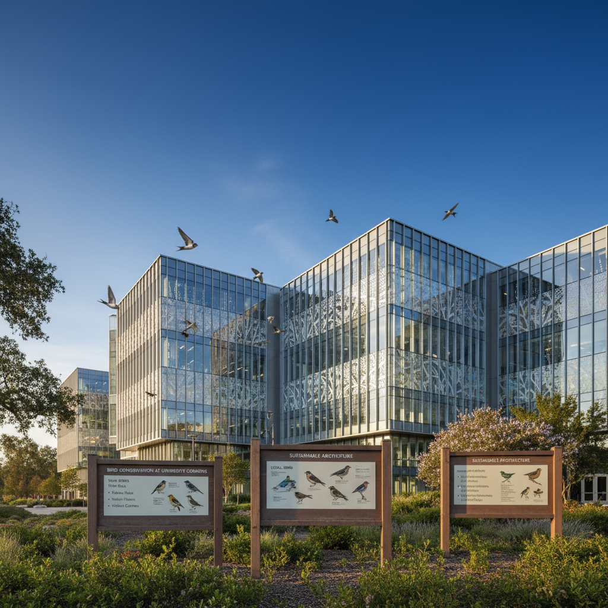
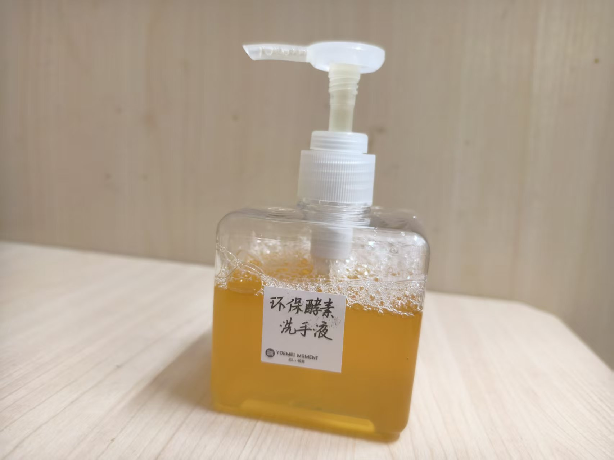

构建绿色校园，培养环保意识，推动可持续发展教育 让每一位师生都成为可持续发展的实践者和传播者
通过实践项目推动校园可持续发展，培养学生的环保意识和创新能力
探索我们最具创新性和影响力的可持续发展项目

通过生态设计和可持续景观改造，将蔚秀园打造成为一个绿色学习和休闲空间。

推动绿色餐饮理念，减少食物浪费，建立可持续的校园餐饮系统。

保护校园鸟类，通过科学设计减少鸟类与建筑物的碰撞。

利用有机废料制作环保酵素，推广天然清洁用品的使用。
无论你是学生、教师还是校园工作人员，都可以为创建更绿色的校园贡献力量